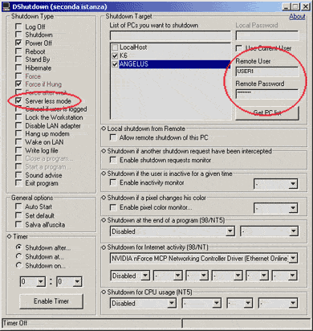
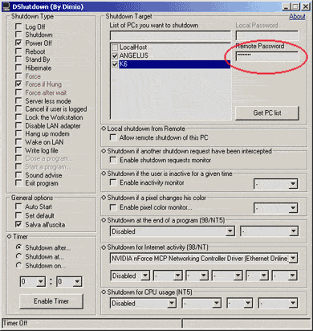

COME SPEGNERE I PC REMOTI
MODO 1
|
1. Sul PC locale avviare
'DShutdown.exe' e selezionare il PC remoto
che si vuole spegnere dalla lista dei PC. 2. Selezionare l'opzione 'Server less mode'. 3. Impostare le caselle 'Remote User' e 'Remote Password' con l'account di un User che abbia i privilegi di shutdown sul PC che si vuole spegnere. |
 |
MODO 2
|
1. Installare 'RDShutdown.exe' sul PC remoto (è possibile utilizzare
l'utilità 'RDShutdown
Setup Utility.exe' per impostare una password). 2. Sul PC locale avviare 'DShutdown.exe'. 3. Selezionare, dalla lista dei PC, il PC remoto che si vuole spegnere (se è stata impostata una password è necessario inserirla nella casella 'Remote Password'). |
 |